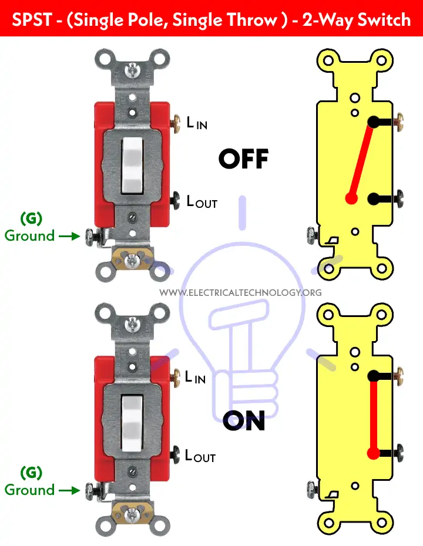
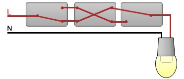

Switches#
Author: Alimohammad Akhavan KazemZadeh
University Email: alimohammad.akhavankazemzadeh@mail.um.ac.ir
Project overview#
1- What is a Switch?
2- What are Poles and Throws?
3- Working of an Electrical Switch
4- Types of Switches
5- Types of Electromechanical Switches
SPST (Single Pole Single Throw)
SPDT (Single Pole Double Throw)
DPST (Double Pole, Single Throw)
DPDT (Double Pole Double Throw)
2PMT & 2P6T (Two Pole, Six Throw & Two Pole, Multiple Throw)
Rotary & Selector Switches
Intermediate Switch – 4-Way Switch
Toggle Switch
Slide Switch
Push Buttons Switch
Limit Switch
Flow Switch
Float Switch
Pressure Switch
Joystick Switch
Temperature & Thermal Switches
Timer Switch
6- Electrical & Electronic Switches
Diode as a Switch
BJT Transistors as a switch:
MOSFET as a Switch:
DIP Switches
7- Conclusion
8- Refrences
1- What is a Switch?#
A switch is a device which is used to make or break an electric circuit automatically or manually. In other words, an electrical switch is a controlling device, which interrupts the flow of electric current or changes the direction of current in a circuit.
Almost all the electrical and electronic systems use at least one switch to control the ON and OFF operations of the device. In simple words, a switch is used to control the circuit operation by activating or deactivating the whole or certain parts or processes of a connected circuit.
Consider the following basic circuit diagram showing the working and controlling of ON/OFF operation of a light bulb. In fig (left side) the switch is OFF (i.e. the contracts of switch are open) hence the light bulb is OFF. On the right side, the contacts of the switch are closed e.g. switch is ON hence the light bulb is ON and glowing.
As switches play an important role in the controlling systems, this way, you may notice them everywhere even for tiny devices as well as large appliances.
There are multiple applications of switches such as basic light and toggle switches for ON and OFF operations for lighting points, fans, computers, printers, blowers in the residential and commercial buildings, automobiles, computers & mobiles, robotic and sensitive aerospace and military applications.
As there are multiple types of switches which are used for different and designed applications. For example, a single pole switch can be used to control the OFF and ON operation of a light bulb. Similarly, a two pole (2-Way Switch) can be used to control two circuits or two operations of a device. Additionally, Intermediate switches (4-Way switch) are used to control the lighting from two different locations e.g. staircase wiring, corridor & hallway wiring, hostel wiring, godown wiring, tunnel wiring, hospital wiring etc. and so on.
As a switch is used to control the ON & OFF operation of the device, the various types of switches are designed for different applications based on the characteristics, properties and features of switches.
2- What are Poles and Throws?#
In electronics, a pole refers to the number of circuits a switch or relay can control. Typically, a single pole switch means it can only control one circuit. On the other hand, throws refer to the number of output connections each switch can make. It’s also known as the number of positions a given pole attains. Usually, a single-throw switch only has one position (on or off) while a double-throw switch can acquire two positions.
3- Working of an Electrical Switch:#
The controlling operation of a switch can be defined by its “Pole” and “Throw“. A Pole represents the number of operations controlled by a single switch.
The Throw indicates the number of contacts in a switch. For example, the NO (Normally Open) and NC (Normally Closed) are Single Throw which is used to control the circuit by making/breaking contacts of the switch.
Similarly, The intermediate and changeover switches are Double Throw which is used to control the two way operation of the circuit by closing/opening contacts of the switches which is used to divert the flow of current from one circuit to another. In simple words, A Single-Pole-Single Throw (SPST) switch is known for controlling a single circuit (e.g. ON/OFF) per operation. This way, the number of poles and throws are used to represent the controlling process of a switch.
Based on the above explanation, standard number of poles and throws switches are available such as Single Pole, Single Throw (SPST), Double Pole, Double Throw (DPDT), Two Poles, Six Throw (2P6T) and Three Poles, Multiple Throw (3PMT) for selectors and rotary switches etc.
The operation of switch can be defined via two ways i.e. Latching Switches & Momentary Switches.
A Latched Switch (Aka Maintained Switch or Locked Switch) is known to be a switch which maintains its last state until it is automatically or manually forced to change the position. Examples: common example as a light switch. In short, the latch switch holds its state whether ON or OFF until the new commands initiated.
A Momentary Switch is a switch which maintains its state as long as the button is pressed and actuated. When the pressure is removed, it returns to the previous state both in position and operation. Examples: Push buttons, electric drill, push-down buttons in the blowers etc. In simple words, momentary switch holds the state only when the specific command is presented only.
4- Types of Switches#
Generally, Switches can be categorized as.
Mechanical Switches
Electrical & Electronic Switches
Both of these types of switches are widely used in electrical and electronics applications where the selection of switch type depends on the system requirements and system needs in which they are going to be incorporated. Switches can also be categories on many different bases and factors.
5- Types of Electromechanical Switches#
Mechanical switch is a switch in which two metal plates (switch contacts) touch each other to make a physical contact for the current to flow through it and separate from each other to interrupt the flow of current.
There are different types of mechanical switches which can be additionally categorized on the basis of power handling capacity, number of poles & throws (SPST, SPDT, DPST, DPDT, DPMT etc), construction and operation, number of contacts, holding state (Locked & Momentary).
The contact material for electromechanical switches is chosen by keeping in mind that the metal oxides which are produced due to corrosion, are mostly insulators and layers of such oxides on the switch plates will hinder the normal operation of the switch. This way, hard drawn copper or forged copper is a good option as contact material which holds and carries the rated current.
Mechanical Switches can be categories on the basis of different factors, design and operation as follow:
SPST (Single Pole Single Throw)#
This is a simple ON/OFF switch commonly found in our homes for lighting circuits and small load appliances as well as computers and devices. It is also called a “One Way” or “Single Way” Switch. It controls single operation in a circuit e.g. it makes or breaks the circuit. Generally, the contact of the SPST switch can be either NO (Normally Open) for OFF position or NC (Normally Closed) for ON position. An open switch indicates a break in the circuit i.e. it stops the flow of current in it. A closed switch represents the circuit is completed and current is flowing through it.
Working of an SPST switch:
The working of an SPST switch is simple – once a user pushes the switch button, the contacts inside the switch close, allowing current flow. And as soon as you turn off the switch, the contacts separate, interrupting the current flow. Take the example of a light bulb; when you turn the bulb switch on, the contact closes, and current flows, which allows the bulb to glow. Conversely, when you turn off the switch, the circuit breaks, separating contacts, and no current flows. As a result, the bulb’s glow goes off.
Applications of an SPST switch:
Doorbell Buttons: Momentary push button SPST switches find applications in doorbell buttons as they complete a circuit when pressed, producing a chime sound. Security Systems: SPST switches are also quite useful in security systems. They break the circuit when someone tries to tamper with the security devices, triggering an alarm and alerting everyone. Lighting Systems: You can use SPST switches to turn a light on or off in your residential or commercial building with a press of a button.
Advantages of an SPST switch:
Affordable: SPST switches are quite affordable due to their simple design and easy construction, making them suitable for various applications. Easy to Wire: An SPST switch doesn’t have complex wiring. You’ve to make a few connections, and the switch is ready for operation, making it quite popular among DIY enthusiasts. High Load Capacity: Surprisingly, SPST switches are capable of handling high current and voltage, which is ideal for applications where significant electric power needs to be controlled.

Drawing a simple circuit with an SPST Switch with Schemdraw:#
import schemdraw
import schemdraw.elements as elm
with schemdraw.Drawing() as d:
d += elm.SourceV().label('V')
d += elm.Line().right()
d += elm.Switch().label('SPST Switch')
d += elm.Line().right()
d += elm.Resistor().label('R')
d += elm.Line().down()
d += elm.Line().left().tox(0)
d += elm.Line().up().toy(0)
When SPST switch is closed:#
import PySpice.Logging.Logging as Logging
logger = Logging.setup_logging()
from PySpice.Spice.Netlist import Circuit
from PySpice.Unit import *
circuit = Circuit('Independent Voltage Sources')
# Voltage source V1
circuit.V(1, 'A', circuit.gnd, 10@u_V) # V1 = 10V
# Define SPST switch model and add it to the circuit
circuit.model('MySwitch', 'sw', ron=1@u_Ω, roff=1@u_MΩ, vt=0.5@u_V, vh=0.1@u_V)
# Adding control nodes for the switch (switch starts in the open state)
circuit.S(1, 'A', 'B', 'A', circuit.gnd, model='MySwitch')
# Resistor R1 = 5Ω connected between node B and ground
resistor = circuit.R(1, 'B', circuit.gnd, 5@u_Ω)
# Create a simulator object
simulator = circuit.simulator(temperature=25, nominal_temperature=25)
analysis = simulator.operating_point()
# Extract node voltages
voltage_A = float(analysis['A'])
voltage_B = float(analysis['B'])
# Calculate the current through the resistor branch
resistor_current = (voltage_B - 0) / 5 # I = V / R (Ohm's law)
# Print results
print(f"Current of the R: {resistor_current:.0f} A")
Current of the R: 2 A
C:\Users\Hadi\AppData\Local\Temp\ipykernel_16684\458906458.py:26: DeprecationWarning: Conversion of an array with ndim > 0 to a scalar is deprecated, and will error in future. Ensure you extract a single element from your array before performing this operation. (Deprecated NumPy 1.25.)
voltage_A = float(analysis['A'])
C:\Users\Hadi\AppData\Local\Temp\ipykernel_16684\458906458.py:27: DeprecationWarning: Conversion of an array with ndim > 0 to a scalar is deprecated, and will error in future. Ensure you extract a single element from your array before performing this operation. (Deprecated NumPy 1.25.)
voltage_B = float(analysis['B'])
When SPST switch is opened:#
import PySpice.Logging.Logging as Logging
logger = Logging.setup_logging()
from PySpice.Spice.Netlist import Circuit
from PySpice.Unit import *
circuit = Circuit('Independent Voltage Sources')
# Voltage source V1
circuit.V(1, 'A', circuit.gnd, 10@u_V) # V1 = 10V
# Define SPST switch model and add it to the circuit
circuit.model('MySwitch', 'sw', ron=1@u_Ω, roff=1@u_MΩ, vt=0.5@u_V, vh=0.1@u_V)
# Adding control nodes for the switch (set control voltage to 0V to keep it open)
circuit.S(1, 'A', 'B', 'C', circuit.gnd, model='MySwitch')
# Voltage source to control the switch (set to a voltage below the threshold)
circuit.V(2, 'C', circuit.gnd, 0@u_V) # Control voltage = 0V
# Resistor R1 = 5Ω connected between node B and ground
resistor = circuit.R(1, 'B', circuit.gnd, 5@u_Ω)
# Create a simulator object
simulator = circuit.simulator(temperature=25, nominal_temperature=25)
analysis = simulator.operating_point()
# Extract node voltages
voltage_A = float(analysis['A'])
voltage_B = float(analysis['B'])
# Calculate the current through the resistor branch
resistor_current = (voltage_B - 0) / 5 # I = V / R (Ohm's law)
# Print results
print(f"Current of the R: {resistor_current:.0f} A")
Current of the R: 0 A
C:\Users\Hadi\AppData\Local\Temp\ipykernel_16684\145840188.py:29: DeprecationWarning: Conversion of an array with ndim > 0 to a scalar is deprecated, and will error in future. Ensure you extract a single element from your array before performing this operation. (Deprecated NumPy 1.25.)
voltage_A = float(analysis['A'])
C:\Users\Hadi\AppData\Local\Temp\ipykernel_16684\145840188.py:30: DeprecationWarning: Conversion of an array with ndim > 0 to a scalar is deprecated, and will error in future. Ensure you extract a single element from your array before performing this operation. (Deprecated NumPy 1.25.)
voltage_B = float(analysis['B'])
SPDT (Single Pole Double Throw):#
SPDT switch has mainly three pins (terminals) and an extra as ground terminal. The input terminal is known and used as “common” which is also called a Two-Way Switch (known as Three-Way Switch in the US). The remaining two terminals are called travelers (output terminals).
A two circuits can be controlled at the same time while using this switch. Because of this functionality e.g. changeover operations, SPDT switches are also known as selector switches.
Working of an SPDT switch:
Typically, an SPDT switch maintains an On/On position. This means the switch is completing one of the two circuits that it controls. For instance, if the switch is at On-1, the only pole or input is completing the circuit with the throw or output 1. However, if it’s at On-2, this means the input is completing a circuit with the second throw or output 2.
Applications of an SPDT switch:
ABB/Siemens VFDs (Variable Frequency Drives): SPDT switches can be used in VFDs to control various parameters, such as setting different speed profiles or modes of operation for electric motors. Audio Equipment: In audio applications, SPDT switches help select between different signal paths or switch between various effects in audio equipment like speakers.
Advantages of an SPDT switch:
Highly Reliable and Durable: SPDT switches have a robust design that contributes to their durability in challenging conditions and reduces the risk of mechanical failure. Higher Switching Currents: SPDT switches can also handle higher currents, which makes them ideal for controlling relays, pumps, and motors in industrial applications.
Drawing a simple circuit with an SPDT Switch with Schemdraw:#
import schemdraw
import schemdraw.elements as elm
with schemdraw.Drawing() as d:
# Battery
sourceV = elm.SourceV().label('V') # Voltage source
d += sourceV
# Line from battery to SPDT switch
d += elm.Line().right().length(2)
# Add SPDT switch and assign it to a variable
spdt = elm.SwitchSpdt2().down().label('SPDT Switch', loc = 'right') # SPDT switch
d += spdt # Add switch to the drawing
# Top branch from SPDT switch (b contact)
d += elm.Line().right().at(spdt.b) # Connect to the top contact of the switch
d += elm.Resistor().down().label('R1') # Resistor R1
d += elm.Line().down().length(1) # Line after resistor R1
d += elm.Ground() # Ground for top branch
# Bottom branch from SPDT switch (c contact)
d += elm.Resistor().down().label('R2').at(spdt.c) # Resistor R2
d += elm.Line().down().length(1) # Line after resistor R2
d += elm.Ground() # Ground for bottom branch
# Connect Ground to the SourceV
d += elm.Line().down().at(sourceV.start) # Line from the pin of the voltage source down
d += elm.Ground() # Ground connected below the voltage source
import PySpice.Logging.Logging as Logging
logger = Logging.setup_logging()
from PySpice.Spice.Netlist import Circuit
from PySpice.Unit import *
# Define the circuit
circuit = Circuit('SPDT Switch with Voltage Source')
# Increase voltage source V1 to 2000V for higher current
circuit.V(1, 'A', circuit.gnd, 20@u_V) # V1 = 20V
# Define SPDT switch model with appropriate resistance values
circuit.model('MySwitch', 'sw', ron=1@u_Ω, roff=1@u_MΩ, vt=0.5@u_V, vh=0.1@u_V)
# Define the SPDT switch (single switch)
circuit.S(1, 'A', 'B', 'C', circuit.gnd, model='MySwitch') # SPDT switch connects A to B or C
# Control voltage to toggle the switch
# Set to 1V to connect to R1 (active) and 0V to connect to R2 (inactive)
control_voltage_R1 = circuit.V(2, 'C', circuit.gnd, 1@u_V) # Activating R1
# Resistor R1 = 1Ω connected between node B and ground
circuit.R(1, 'B', circuit.gnd, 1@u_Ω) # R1 value changed to 1Ω
# Resistor R2 = 2kΩ connected between node C and ground
circuit.R(2, 'C', circuit.gnd, 2@u_kΩ)
# Create a simulator object
simulator = circuit.simulator(temperature=25, nominal_temperature=25)
analysis = simulator.operating_point()
# Extract node voltages
voltage_A = float(analysis['A'])
voltage_B = float(analysis['B'])
voltage_C = float(analysis['C'])
# Calculate the current through each resistor branch
resistor_current_R1 = (voltage_B - 0) / (1@u_Ω) # Current through R1
resistor_current_R2 = (voltage_C - 0) / (2@u_kΩ) # Current through R2
# Print results
print(f"Current of Resistor R1: {resistor_current_R1:.0f} A")
print(f"Current of Resistor R2: {resistor_current_R2:.0f} A")
Current of Resistor R1: 10 A
Current of Resistor R2: 0 A
C:\Users\Hadi\AppData\Local\Temp\ipykernel_16684\187756662.py:34: DeprecationWarning: Conversion of an array with ndim > 0 to a scalar is deprecated, and will error in future. Ensure you extract a single element from your array before performing this operation. (Deprecated NumPy 1.25.)
voltage_A = float(analysis['A'])
C:\Users\Hadi\AppData\Local\Temp\ipykernel_16684\187756662.py:35: DeprecationWarning: Conversion of an array with ndim > 0 to a scalar is deprecated, and will error in future. Ensure you extract a single element from your array before performing this operation. (Deprecated NumPy 1.25.)
voltage_B = float(analysis['B'])
C:\Users\Hadi\AppData\Local\Temp\ipykernel_16684\187756662.py:36: DeprecationWarning: Conversion of an array with ndim > 0 to a scalar is deprecated, and will error in future. Ensure you extract a single element from your array before performing this operation. (Deprecated NumPy 1.25.)
voltage_C = float(analysis['C'])
DPST (Double Pole, Single Throw):#
DPST switch is basically two SPST switches in one package and can be operated by a single lever. This switch is mostly used where both ground and line need to be broken (or closed) at the same time, same as the operation of a 2-Pole breaker.
It short, It has two poles i.e. it can control two circuits (Hot and Neutral) and a Single Throw i.e. it can only make one operation e.g. ON or OFF.
Double Pole, Single Throw switch has four terminal pins i.e. 2 as Input and the rest of 2 as output. DPST switches are used to control a single circuit while both the contacts are needed to be actuated. For example, a DPST switch is used to break both the Line and Neutral wire for the ON & OFF operation of the connected device to it. Both the contacts are open in case of OFF position while both contacts are closed in case of ON position. In simple words, It either switches ON or OFF the two circuits at the same time.
Working of an DPST switch:
The working of a DPST involves the control of two different circuits from a single actuator, which can be a toggle, lever, or push button. Each switch has four terminals, including a set of contacts (two poles) and two throws (the position these poles acquire). Let’s suppose these terminals are named 1,2, 3, and 4. Terminals 1 and 3 are the first pair, and 2 and 4 are the second. Both these pairs of terminals are electrically isolated from each other.
In On Position: When the switch is turned on, terminals 1 and 3 connect, allowing current flow and completing the 1st circuit. At the same time, terminals 2 and 4 connect to each other creating a 2nd circuit.
In Off Position: As soon as you toggle the switch to the off position, both pairs of terminals separate, and the current flow stops. The primary thing that separates the DPST switch from others is that both circuits are isolated from each other. This is advantageous in situations where you’ve to deal with varying voltage loads.
Applications of an DPST switch:
Thermostat: DPST switches are commonly used in thermostats to control electric heating loads by automatically opening or closing contacts and detecting a change in external temperature. Industrial Equipment: These switches are used in industrial equipment to control multiple power circuits simultaneously.
Advantages of an DPST switch:
Equivalent to 2-SPDT Switches: A DPST switch combines the functionality of two single-pole double-throw (SPDT) switches in one unit, simplifying wiring and conserving space in electrical installations. Functions with Two Independent Circuits: DPST switches can control two different independent circuits, allowing for flexibility in operations.
Drawing a simple circuit with an DPST Switch with Schemdraw:#
import schemdraw
from schemdraw import elements as e
d = schemdraw.Drawing()
# Voltage Sources
d += e.SourceV().up().at((0, 0)).reverse().label('V1')
d += e.SourceV().up().at((1, 0)).reverse().label('V2', loc = 'bottom')
# Switch
d += e.SwitchDpst().down().at((1, 0)).label('DPST switch')
# Circuit layout and connections
d += e.Line().up().at((0, 3)).length(1)
d += e.Line().left().at((0, 4)).length(2)
d += e.Line().down().at((-2, 4)).length(2)
d += e.Ground()
d += e.Line().up().at((1, 3)).length(1)
d += e.Line().right().at((1, 4)).length(2)
d += e.Line().down().at((3, 4)).length(2)
d += e.Ground()
# Resistors with labels
d += e.Resistor().down().at((0, -1)).label('R1')
d += e.Line().down().at((0, -4)).length(1)
d += e.Ground()
d += e.Resistor().down().at((1, -1)).label('R2', loc = 'bottom')
d += e.Line().down().at((1, -4)).length(1)
d += e.Ground()
d.draw()
import PySpice.Logging.Logging as Logging
logger = Logging.setup_logging()
from PySpice.Spice.Netlist import Circuit
from PySpice.Unit import *
# Create the circuit
circuit = Circuit('Independent Voltage Sources')
# Voltage source V1
circuit.V(1, 'A', circuit.gnd, 30@u_V) # V1 = 10V
# Voltage source V2
circuit.V(2, 'C', circuit.gnd, 20@u_V) # V2 = 5V
# Define SPST switch model and add it to the circuit
circuit.model('MySwitch1', 'sw', ron=1@u_Ohm, roff=1@u_MΩ, vt=0.5@u_V, vh=0.1@u_V)
circuit.model('MySwitch2', 'sw', ron=1@u_Ohm, roff=1@u_MΩ, vt=0.5@u_V, vh=0.1@u_V)
# Adding control nodes for the first switch (switch starts in the open state)
circuit.S(1, 'A', 'B', 'A', circuit.gnd, model='MySwitch1')
# Adding control nodes for the second switch (switch starts in the open state)
circuit.S(2, 'C', 'D', 'C', circuit.gnd, model='MySwitch2')
# Resistor R1 = 5Ω connected between node B and ground
resistor1 = circuit.R(1, 'B', circuit.gnd, 5@u_Ohm)
# Resistor R2 = 10Ω connected between node D and ground
resistor2 = circuit.R(2, 'D', circuit.gnd, 10@u_Ohm)
# Create a simulator object
simulator = circuit.simulator(temperature=25, nominal_temperature=25)
analysis = simulator.operating_point()
# Extract node voltages
voltage_A = float(analysis['A']) # Voltage at node A
voltage_B = float(analysis['B']) # Voltage at node B
voltage_C = float(analysis['C']) # Voltage at node C
voltage_D = float(analysis['D']) # Voltage at node D
# Calculate the current through the resistor branches
current_R1 = (voltage_B - 0) / 5 # I_R1 = V_B / R1
current_R2 = (voltage_D - 0) / 10 # I_R2 = V_D / R2
# Print results when switch was closed
print(f"Current of R1: {current_R1:.2f} A")
print(f"Current of R2: {current_R2:.2f} A")
Current of R1: 5.00 A
Current of R2: 1.82 A
C:\Users\Hadi\AppData\Local\Temp\ipykernel_16684\1334944327.py:37: DeprecationWarning: Conversion of an array with ndim > 0 to a scalar is deprecated, and will error in future. Ensure you extract a single element from your array before performing this operation. (Deprecated NumPy 1.25.)
voltage_A = float(analysis['A']) # Voltage at node A
C:\Users\Hadi\AppData\Local\Temp\ipykernel_16684\1334944327.py:38: DeprecationWarning: Conversion of an array with ndim > 0 to a scalar is deprecated, and will error in future. Ensure you extract a single element from your array before performing this operation. (Deprecated NumPy 1.25.)
voltage_B = float(analysis['B']) # Voltage at node B
C:\Users\Hadi\AppData\Local\Temp\ipykernel_16684\1334944327.py:39: DeprecationWarning: Conversion of an array with ndim > 0 to a scalar is deprecated, and will error in future. Ensure you extract a single element from your array before performing this operation. (Deprecated NumPy 1.25.)
voltage_C = float(analysis['C']) # Voltage at node C
C:\Users\Hadi\AppData\Local\Temp\ipykernel_16684\1334944327.py:40: DeprecationWarning: Conversion of an array with ndim > 0 to a scalar is deprecated, and will error in future. Ensure you extract a single element from your array before performing this operation. (Deprecated NumPy 1.25.)
voltage_D = float(analysis['D']) # Voltage at node D
DPDT (Double Pole Double Throw):#
This switch is equivalent to two SPDT switches packaged in one unit. This switch has two common pins and four signal pins (total of 6 terminals). Total four different combinations of signals can be applied to the input pins of this switch. Another switch related to DPDT is DPCO (Double Pole Changeover or Double Pole, Centre Off).
Working of an DPST switch:
Typically, DPDT switches control two separate circuits. In this, two distinct sets of contacts are arranged on two stacked plates. Each set of contacts corresponds to its own pole, which gives the switch a double pole designation.
The operation of a DPDT switch is quite simple. When the switch is moved to a specific position, the electric current enters through one of the poles and passes through the first set of contacts associated with that pole.
Subsequently, the current passes through the second set of contacts associated with the same pole and exits through the other pole of the switch. This arrangement provides you with versatile control over two different circuits.
Applications of an DPST switch:
Robotics: In robotics, DPDT switches can be used to control motor direction, activating/deactivating different actuators and sensors. Telecommunication Systems: DPDT switches are also useful in telecommunication systems for signal routing and switching between different communication channels or modes.
Advantages of an DPST switch:
Cost-Effective: DPDT switches are quite affordable compared to other switches of the same category, making them perfect for various applications. Lightweight: These switches typically have a lightweight and compact design, so they can easily be integrated into different electronic devices and equipment. Failover Capabilities: DPDT switches offer failover capabilities by providing independent paths for current flow, ensuring continuous equipment operation in case of a component failure.
Drawing a simple circuit with an DPDT Switch with Schemdraw:#
import schemdraw
from schemdraw import elements as e
d = schemdraw.Drawing()
# Voltage Sources
d += e.SourceV().up().at((-0.4, 0)).reverse().label('V1')
d += e.SourceV().up().at((1, 0)).reverse().label('V2', loc = 'bottom')
# Switch
d += e.SwitchDpdt().down().at((1, 0)).label('DPDT switch')
# Circuit layout and connections
d += e.Line().up().at((-0.4, 3)).length(1)
d += e.Line().left().at((-0.4, 4)).length(2)
d += e.Line().down().at((-2.4, 4)).length(2)
d += e.Ground()
d += e.Line().up().at((1, 3)).length(1)
d += e.Line().right().at((1, 4)).length(2)
d += e.Line().down().at((3, 4)).length(2)
d += e.Ground()
# Resistors with labels
d += e.Resistor().down().at((-0.8, -1))
d += e.Line().down().at((-0.8, -4)).length(1)
d += e.Ground()
d += e.Resistor().down().at((0, -1))
d += e.Line().down().at((0, -4)).length(1)
d += e.Ground()
d += e.Resistor().down().at((0.6, -1))
d += e.Line().down().at((0.6, -4)).length(1)
d += e.Ground()
d += e.Resistor().down().at((1.4, -1))
d += e.Line().down().at((1.4, -4)).length(1)
d += e.Ground()
d.draw()
Calculation of the branch currents in the above circuit using PySpice, where the resistors R1, R2, R3, and R4 are arranged from left to right, and the DPDT switch is connected to resistors R2 and R4, while resistors R1 and R3 are disconnected:#
import PySpice.Logging.Logging as Logging
logger = Logging.setup_logging()
from PySpice.Spice.Netlist import Circuit
from PySpice.Unit import *
# Create the circuit
circuit = Circuit('Selective Current Flow with Switch and Resistors')
# Voltage sources
circuit.V(1, 'node_v1', circuit.gnd, 30@u_V) # V1 = 10V
circuit.V(2, 'node_v2', circuit.gnd, 20@u_V) # V2 = 5V
# Define SPST switch model and add it to the circuit
circuit.model('MySwitch', 'sw', ron=1@u_Ohm, roff=1@u_MΩ, vt=0.5@u_V, vh=0.1@u_V)
# Resistor R1 (one side connected to ground, other side floating, should have no current)
circuit.R(1, 'node_r1', circuit.gnd, 5@u_Ohm)
# Resistor R2 connected to V1 through switch (should have current when switch is closed)
circuit.S(1, 'node_v1', 'node_switch', 'node_v1', circuit.gnd, model='MySwitch')
circuit.R(2, 'node_switch', circuit.gnd, 5@u_Ohm)
# Resistor R3 (one side connected to ground, other side floating, should have no current)
circuit.R(3, 'node_r3', circuit.gnd, 10@u_Ohm)
# Resistor R4 connected to V2 through switch (should have current when switch is closed)
circuit.S(2, 'node_v2', 'node_switch', 'node_v2', circuit.gnd, model='MySwitch')
circuit.R(4, 'node_switch', circuit.gnd, 10@u_Ohm)
# Create a simulator object
simulator = circuit.simulator(temperature=25, nominal_temperature=25)
analysis = simulator.operating_point()
# Extract node voltages
voltage_node_v1 = float(analysis['node_v1'])
voltage_node_switch = float(analysis['node_switch'])
voltage_node_v2 = float(analysis['node_v2'])
voltage_node_r1 = float(analysis['node_r1']) # Voltage at node connected to R1
voltage_node_r3 = float(analysis['node_r3']) # Voltage at node connected to R3
# Calculate the current through the resistor branches
current_R1 = (voltage_node_r1 - 0) / 5 # I_R1 = V_R1 / R1 (should be 0 naturally)
current_R2 = (voltage_node_switch - 0) / 5 # I_R2 = V_switch / R2
current_R3 = (voltage_node_r3 - 0) / 10 # I_R3 = V_R3 / R3 (should be 0 naturally)
current_R4 = (voltage_node_switch - 0) / 10 # I_R4 = V_switch / R4
# Print results
print(f"Current of R1: {current_R1:.2f} A") # Should show 0 A from circuit calculation
print(f"Current of R2: {current_R2:.2f} A")
print(f"Current of R3: {current_R3:.2f} A") # Should show 0 A from circuit calculation
print(f"Current of R4: {current_R4:.2f} A")
C:\Users\Hadi\AppData\Local\Temp\ipykernel_16684\4040343140.py:36: DeprecationWarning: Conversion of an array with ndim > 0 to a scalar is deprecated, and will error in future. Ensure you extract a single element from your array before performing this operation. (Deprecated NumPy 1.25.)
voltage_node_v1 = float(analysis['node_v1'])
Current of R1: 0.00 A
Current of R2: 4.35 A
Current of R3: 0.00 A
Current of R4: 2.17 A
C:\Users\Hadi\AppData\Local\Temp\ipykernel_16684\4040343140.py:37: DeprecationWarning: Conversion of an array with ndim > 0 to a scalar is deprecated, and will error in future. Ensure you extract a single element from your array before performing this operation. (Deprecated NumPy 1.25.)
voltage_node_switch = float(analysis['node_switch'])
C:\Users\Hadi\AppData\Local\Temp\ipykernel_16684\4040343140.py:38: DeprecationWarning: Conversion of an array with ndim > 0 to a scalar is deprecated, and will error in future. Ensure you extract a single element from your array before performing this operation. (Deprecated NumPy 1.25.)
voltage_node_v2 = float(analysis['node_v2'])
C:\Users\Hadi\AppData\Local\Temp\ipykernel_16684\4040343140.py:39: DeprecationWarning: Conversion of an array with ndim > 0 to a scalar is deprecated, and will error in future. Ensure you extract a single element from your array before performing this operation. (Deprecated NumPy 1.25.)
voltage_node_r1 = float(analysis['node_r1']) # Voltage at node connected to R1
C:\Users\Hadi\AppData\Local\Temp\ipykernel_16684\4040343140.py:40: DeprecationWarning: Conversion of an array with ndim > 0 to a scalar is deprecated, and will error in future. Ensure you extract a single element from your array before performing this operation. (Deprecated NumPy 1.25.)
voltage_node_r3 = float(analysis['node_r3']) # Voltage at node connected to R3
2PMT & 2P6T (Two Pole, Six Throw & Two Pole, Multiple Throw):#
DPMT stands for Double Pole Multi Throw and 2P6T abbreviated as 2-Pole, Multi Throw switches. These kinds of switches consist of 2-poles and multiple throw i.e. they can be used to control two independent circuits. These types of switches with a common lever are used as changeover and selectors switches for multiway switching. Other related switches are 2P4T which is used to control two different circuits while the rest can be controlled and connected to the four throw terminals. 2PMT switch is categorized as rotary and selector switches (discussed in the following section).
Rotary & Selector Switches:#
Selectors switches are rotary switches with a knob which rotates around its axis and switches and connects the common terminal to many of the output terminals. It is the same as a knob switch in the digital or analog multimeter based on the working principle of demultiplexer, electrical measurement tools and metering, radio bands selectors, channel selectors in a communication system etc.
A rotary switch may have multiple poles and throws for different circuits. The selector switches are available in different ranges i.e. 1P-12 way, 2P- 6 ways (2P6T), 3P-4 Ways & 4P-3 ways etc. It has multiple moving and statutory contacts where the rotating knob is used to divert the switching operation of the switch from one to another.
Modern rotary switches use a “star wheel” mechanism to provide the switching positions, such as at every 30, 45, 60, or 90 degrees. Nylon cams are then mounted behind this mechanism and spring-loaded electrical contacts slide around these cams. The cams are notched or cut where the contact should close to complete an electrical circuit.
Some rotary switches are user-configurable in relation to the number of positions. A special toothed washer that sits below the holding nut can be positioned so that the tooth is inserted into one of a number of slots in a way that limits the number of positions available for selection. For example, if only four positions are required on a twelve position switch, the washer can be positioned so that only four switching positions can be selected when in use.
Intermediate Switch – 4-Way Switch:#
Intermediate switch is also known as a four way switch in the US (and Three way switch in the UK & EU). It has four terminals which are used to divert the flow of current from one position to another. These switches are used to control a single appliance such as a light bulb point from different locations. For example, to control a light bulb from two different locations or simply a stair case wiring configuration. An intermediate switch is also called a changeover or crossover switch.
An Intermediate Switch is a hugely versatile switch that can be used for most situations, however this does mean that it becomes more expensive and is only used where necessary. Intermediate Switches are used for when there are three switches (or more) controlling one light. An example of this could be on a landing, with a switch at the bottom of the stairs, at the top of the stairs and at the end of the landing space. On this circuit you would need the middle switch (the one at the top of the stairs) to be an Intermediate Switch. This circuit can then be continued for multiple switches where there are three or more switches.

Toggle Switch:#
Toggle switches are latched type of switches which are actuated by a lever angled in one or more directions. This switch is stable in state and remains in that state unless or until the lever is pushed in another direction. Most of all household applications (such as lighting control switches) have toggle switch and it can fall into any category as mentioned above e.g. SPST, DPDT, DPST, DPDT etc. They are available for high current applications up to 30+ amperes and can be used for small current switching operations. The rating, shape and design may vary depending on the circuit requirement and applications.
Slide Switch:#
A slide switch is a mechanical device that is commonly used for controlling an electrical circuit. It utilizes a simple sliding action to move the switch from an open position to a closed one, or vice-versa. As maintained-contact switches, slide switches remain in one state until manually actuated into another state.
Slide switches will often have a single pole, double throw (SPDT) construction. This allows the power being delivered to the circuit to be swapped from one power source to another (referred to as on-on operation). In other words, the movement of the slide switch actuator redirects the flow of current from one circuit to the other.
Single pole, single throw (SPST) slides switches are also commonplace, providing on-off functionality. Under certain circumstances, a double pole, double throw (DPDT) circuit might be required, allowing for on-off-on configurations. It is also possible to have multiple throws for multi-on-on functionality. However, this can potentially be problematic, making it difficult for the switch to be placed in the right position.

Limit Switch:#
A limit switch is operated automatically (by mechanical parts or machine) or manually by an object in control systems. The bumper arm in the switch is used as actuator and when pressed or comes in contact with an object, it changes the direction of the flowing current hence it changes the position and operation of the circuit.
Some examples of limit switches are Push Button Limit Switch which are actuated by the motion of mechanical parts of machines or other objects. Another example is Push Button Double Pole Limit Switch with two poles which is used to control two separate circuits e.g. it breaks one circuit and closes the other one at once.
Flow Switch:#
Flow switches are used to detect and control the flow of air or the movement of liquid (such as water, oil etc.) in the connected ducts and pipes. When the air or liquid flows above the limits in the metal or plastic pipes, the snap action by spring mechanism moves the metal arm of the micro switch which leads to makes or breaks the contacts, hence the operation of the system changes. Flow switches can be both Normally Closed and Normally Open which are used to control the air flow or liquids movement in the pipes, ducts and tanks etc.

Float Switch:#
As the name indicates, a float switch is a floating switch that controls a circuit or machine inside a tank full of liquid (such as a water tank). It detects the level of the liquid and switches ON or OFF when the liquid level rises or falls according to the requirements.
For example, when the level of water falls below the designated line, the contact arms and rod makes the contacts which trigger the circuit, hence, the motor pump (AC or DC Motor) is activated and the water tank again starts to full of the liquid. Similarly, When the water tank is full, the lever disconnects the terminal contacts and motor pumps automatically switched OFF. The whole process is automatic and simultaneous with the help of using a float switch.
Pressure Switch:#
A pressure switch is a form of switch that operates an electrical contact when a certain set fluid pressure has been reached on its input. The switch may be designed to make contact either on pressure rise or on pressure fall. Pressure switches are widely used in industry to automatically supervise and control systems that use pressurized fluids. Another type of pressure switch detects mechanical force; for example, a pressure-sensitive mat is used to automatically open doors on commercial buildings. Such sensors are also used in security alarm applications such as pressure sensitive floors.
Pressure switches are used to sense and operate by air or gas under pressure in industrial applications. The different types of (such as metal bellow, piston type and diaphragm operated pressure) switches are widely used in the pneumatic devices and hydraulic systems to measure a range of levels of pressures. The single pole or double pole pressure switches are operated by pressure detection elements which trigger the contract to open or close to change the position of the system.
Joystick Switch:#
Joystick (also known as flight stick or Hat switch) is a switch with a lever connected to it. The lever freely moves where the directional movement connects the different terminals of the switch to control the circuit. The switch contacts can be actuated by moving the stick in the right, left, upper and lover positions. They are mainly used in gaming controller pads, building machinery, portable control equipment, camera motion control, trucks, excavators and cranes in the industries.
Temperature & Thermal Switches:#
What is a temperature switch?
A temperature switch or thermal switch is used to open and close switch contacts. The switching status of the temperature switch changes depending on the input temperature. This function is used as protection against overheating or overcooling. Basically, the thermal switches are responsible for monitoring the temperature of machinery and equipment and are used for temperature limitation.
What types of temperature switches are there?
Generally, a distinction is made between mechanical and electronic switches. The mechanical temperature switches differ in the various switch models, such as bimetal temperature switches and gas-actuated temperature switches. When a high accuracy is required, an electronic temperature switch should be used. Here, the user can change the limit value themselves and set several switch points. Bimetal temperature switches, on the other hand, operate with low accuracy, but are very compact and inexpensive. Another switch model is the gas-actuated temperature switch, which is used especially in safety-critical applications.
What is the difference between a temperature switch and a temperature controller?
A temperature controller can, using a temperature probe, determine the actual temperature and then compare it with the set point. The desired set point is adjusted via an actuator. The temperature controller is thus responsible for the display, control and monitoring of temperatures. Temperature switches, on the other hand, trigger a switching operation depending on the temperature and are used to open and close circuits.
summary
Thermal and Temperature switches depend on temperature where the heat sensing element (such as bimetallic strip) is bent by thermal expansion i.e. when exposed to the heat. For example, when the temperature rises and crosses the preset level, the bimetallic strip expands and breaks the contact, hence the circuit is open.
When the temperature is reduced below the level, the bimetallic strip shrinks (and returns to the normal position) which leads to making contacts, thus the contacts are connected to close the circuit. Examples of thermal switches are NC thermal switch, NO thermal switch. mercury glass tube and thermal relays etc. which is used for overload protection of electrical machines.
Timer Switch:#
Both digital and analog timer switches (also known as timer) are used for time delay for specific applications. A time switch can be configured using the mechanical timer clockwork where it makes or breaks the contact when the (set-up) time runs out and hence ON or OFF the connected circuit from the supply.
Timer switches with the help of contactor and relays are used in power circuits, water heater timer, central heating control, vehicles, sleep timer in the TV sets etc. which operate on timing mechanism. The digital timers (e.g. ST01 Timer or Dusk-dawn timers) are used to control automatic ON-OFF operation of the light fixture based on configured time during the day or Night.
The switch may be connected to an electric circuit operating from mains power, including via a relay or contactor; or low voltage, including battery-operated equipment in vehicles. It may be built into power circuits (as with a central heating or water heater timer), plugged into a wall outlet with equipment plugged into the timer instead of directly into the power point; or built into equipment.

6- Electrical & Electronic Switches:#
Electrical and mostly electronic switches are solid-state devices based on semiconductor materials with fast response, accurate operation and small in size as compared to mechanical and electromechanical switches. The solid state switches are based on the basic components such as diodes, SCR, MOSFET, GTO, IGBT, transistors, and relays etc.
Electronic switches have no physical contacts or moving parts and can be automatically operated by electric signals or programmed circuits like microcontroller or microprocessor. They are precise in operation for stability and reliability of the system without noise of switching operation. They are used in many modern applications such as VFD drives for motors, HVAC & in industrial, automation, automotive, aerospace, robotic and many more commercial applications.
Electrical Switches over Mechanical Switches Electrical switches are a preferred choice over mechanical switches due to the following reasons
1- Mechanical switches are prone to oxidation of metals whereas electrical switches don’t.
2- Mechanical switches have movable contacts.
3- They are more prone to stress and strain than electrical switches.
4- The worn and torn of mechanical switches often affect their working.
Diode as a Switch:#
Diode is a two terminal PN junction that can be used in various applications. One of such applications is an electrical switch. The PN junction, when forward biased acts as close circuited and when reverse biased acts as open circuited. Hence the change of forward and reverse biased states makes the diode work as a switch, the forward being ON and the reverse being OFF state.
Working of Diode as a Switch:
Whenever a specified voltage is exceeded, the diode resistance gets increased, making the diode reverse biased and it acts as an open switch. Whenever the voltage applied is below the reference voltage, the diode resistance gets decreased, making the diode forward biased, and it acts as a closed switch.
The following circuit explains the diode acting as a switch.#
import schemdraw
import schemdraw.elements as elm
with schemdraw.Drawing() as d:
# Left voltage source
SourceV1 = elm.SourceV().up().label('V1')
d += SourceV1
# Resistor R1
d += elm.Resistor().right().label('R1').dot()
# Connect diode to the switch (diode acts as a switch)
diode = elm.Diode().down().label('D', loc='right')
d += diode
# Resistor R2
d += elm.Resistor().down().at(diode.end).label('R3')
d += elm.Resistor().right().at(diode.start).label('R2')
# Right voltage source
d += elm.SourceV().down().label('V2', loc = 'bottom')
d += elm.Line().down().length(3)
# Connect bottom wire
d += elm.Line().left().tox(0)
d += elm.Line().down().length(3).at(SourceV1.start)
d.draw()
Forward Bias: If positive signal applied to the Anode terminal and cathode is negative, the diode is forward biased, hence it acts as a closed switch and current is crossed of that. Reverse Bias: If the negative signal applied to the Anode and cathode is positive, the diode is in reverse biased, thus it acts as an open switc and current is not crossed of that.
A switching diode has a PN junction in which P-region is lightly doped and N-region is heavily doped. The above circuit symbolizes that the diode gets ON when positive voltage forward biases the diode and it gets OFF when negative voltage reverse biases the diode.
Diode Switching Times While changing the bias conditions, the diode undergoes a transient response. The response of a system to any sudden change from an equilibrium position is called as transient response. The sudden change from forward to reverse and from reverse to forward bias, affects the circuit. The time taken to respond to such sudden changes is the important criterion to define the effectiveness of an electrical switch.
Now we have the PySpice code for the above circuit here, where the voltage V1 is greater than the voltage V2 , the voltage at the anode of the diode is higher, and the diode becomes active, acting like a closed switch, allowing current to flow through R_3 , which we will calculate:#
import PySpice.Logging.Logging as Logging
logger = Logging.setup_logging()
from PySpice.Spice.Netlist import Circuit
from PySpice.Unit import *
# Define the circuit
circuit = Circuit('Diode Switch Circuit')
# Set a high voltage for V1
circuit.V(1, 'node_v1', circuit.gnd, 30@u_V) # V1 = 30V
circuit.V(2, 'node_bottom', circuit.gnd, 5@u_V) # V2 = 5V
# Define Resistors with low values to achieve high current
circuit.R(1, 'node_v1', 'node_1', 1@u_Ω) # R1 = 1Ω
circuit.R(2, 'node_1', 'D_anode', 1@u_Ω) # R2 = 1Ω
circuit.R(3, 'D_cathode', 'node_bottom', 1@u_Ω) # R3 = 1Ω
circuit.D(1, 'D_anode', 'D_cathode', model='1N4148') # Diode
# Define a diode model if it's not already in your library
circuit.model('1N4148', 'D', IS=1e-14, N=1)
# Create a simulator object and run an operating point analysis
simulator = circuit.simulator(temperature=25, nominal_temperature=25)
analysis = simulator.operating_point()
# Extract node voltages for R3 current calculation
voltage_D_cathode = float(analysis['D_cathode'])
voltage_node_bottom = float(analysis['node_bottom'])
# Calculate current through R3 using Ohm's law
current_R3 = (voltage_D_cathode - voltage_node_bottom) / (1@u_Ω)
# Print the result
print(f"Current of Resistor R3: {current_R3:.6f} A")
Current of Resistor R3: 8.037220 A
C:\Users\Hadi\AppData\Local\Temp\ipykernel_16684\2510366580.py:28: DeprecationWarning: Conversion of an array with ndim > 0 to a scalar is deprecated, and will error in future. Ensure you extract a single element from your array before performing this operation. (Deprecated NumPy 1.25.)
voltage_D_cathode = float(analysis['D_cathode'])
C:\Users\Hadi\AppData\Local\Temp\ipykernel_16684\2510366580.py:29: DeprecationWarning: Conversion of an array with ndim > 0 to a scalar is deprecated, and will error in future. Ensure you extract a single element from your array before performing this operation. (Deprecated NumPy 1.25.)
voltage_node_bottom = float(analysis['node_bottom'])
Now where the voltage V1 is less than the voltage V2 , the voltage at the anode of the diode is less, and the diode becomes not active, acting like a opened switch, allowing current to flow through R_3 , which we will calculate:#
import PySpice.Logging.Logging as Logging
logger = Logging.setup_logging()
from PySpice.Spice.Netlist import Circuit
from PySpice.Unit import *
# Define the circuit
circuit = Circuit('Diode Switch Circuit')
# Set a high voltage for V1 and V2
circuit.V(1, 'node_v1', circuit.gnd, 5@u_V) # V1 = 5V
circuit.V(2, 'node_bottom', circuit.gnd, 30@u_V) # V2 = 30V
# Define Resistors with low values to achieve high current
circuit.R(1, 'node_v1', 'node_1', 1@u_Ω) # R1 = 1Ω
circuit.R(2, 'node_1', 'D_anode', 1@u_Ω) # R2 = 1Ω
circuit.R(3, 'D_cathode', 'node_bottom', 1@u_Ω) # R3 = 1Ω
circuit.D(1, 'D_anode', 'D_cathode', model='1N4148') # Diode
# Define a diode model if it's not already in your library
circuit.model('1N4148', 'D', IS=1e-14, N=1)
# Create a simulator object and run an operating point analysis
simulator = circuit.simulator(temperature=25, nominal_temperature=25)
analysis = simulator.operating_point()
# Extract node voltages for R3 current calculation
voltage_D_cathode = float(analysis['D_cathode'])
voltage_node_bottom = float(analysis['node_bottom'])
# Calculate current through R3 using Ohm's law
current_R3 = (voltage_D_cathode - voltage_node_bottom) / (1@u_Ω) #R3
# Print the result
print(f"Current of Resistor R3: {current_R3:.6f} A")
Current of Resistor R3: -0.000000 A
C:\Users\Hadi\AppData\Local\Temp\ipykernel_16684\1803516277.py:28: DeprecationWarning: Conversion of an array with ndim > 0 to a scalar is deprecated, and will error in future. Ensure you extract a single element from your array before performing this operation. (Deprecated NumPy 1.25.)
voltage_D_cathode = float(analysis['D_cathode'])
C:\Users\Hadi\AppData\Local\Temp\ipykernel_16684\1803516277.py:29: DeprecationWarning: Conversion of an array with ndim > 0 to a scalar is deprecated, and will error in future. Ensure you extract a single element from your array before performing this operation. (Deprecated NumPy 1.25.)
voltage_node_bottom = float(analysis['node_bottom'])
BJT Transistors as a switch:#
A transistor can be used as a solid state switch. If the transistor is operated in the saturation region then it acts as closed switch and when it is operated in the cut off region then it behaves as an open switch. The transistor operates as a Single Pole Single Throw (SPST) solid state switch. When a zero input signal applied to the base of the transistor, it acts as an open switch. If a positive signal applied at the input terminal then it acts like a closed switch. When the transistor operating as switch, in the cut off region the current through the transistor is zero and voltage across it is maximum, and in the saturation region the transistor current is maximum and voltage across is zero. Therefore, both the on – state and off – state power loss is zero in the transistor switch.
in other words, Bipolar Junction Transistors (BJT) can be used as normal switches as they are able to block or pass the flowing of electric current in different modes of operations. For example: Saturation Region: In this mode, both of the junctions of the BJT transistors are in forward bias. This region is used for the ON-state of a switch where ic = isat . Cut-OFF Region: In the cutoff region, both junctions of a BJT transistor are in reverse bias. Here the BJT works as an OFF-state of a switch where ic = 0.
When the input to the inverter is high “+5V”, the NPN transistor is saturated and its output is low “≈0V”. When the input to the inverter is low, the transistor is cut-off and its output is high. In short, In the saturation region, it is “ON” like a closed switch In the cut-off region, it is “OFF” like an open switch.
Cut Off State (Open Switch):#
When transistor operates in the cut off region shows the following characteristics:
1- The input is grounded i.e. at zero potential.
2- The VBE is less that cut – in voltage 0.7 V.
3- Both emitter – base junction and collector – base junction are reverse biased.
4- The transistor is fully – off acting as open switch.
5- The collector current IC = 0 A and output voltage Vout = VCC.
import schemdraw
import schemdraw.elements as elm
with schemdraw.Drawing() as d:
# Vcc and RL connected to the collector
SourceV = elm.SourceV().up().label('Vin', loc='top')
d += SourceV
d += elm.Line().right().length(1)
d += elm.Resistor().right().label('Rb')
d += elm.Line().right().length(1)
d += elm.BjtNpn().right().anchor('base').label('BJT Transistor')
d += elm.Line().down().at((5.75, 2.3))
d += elm.Ground()
# # Vin and Rin connected to the base
d += elm.Resistor().up().label('Rc', loc = 'bottom').at((5.75, 3.6))
d += elm.SourceV().up().label('+Vcc', loc = 'bottom').reverse()
d += elm.Line().left().length(2)
d += elm.Line().down().length(1)
d += elm.Ground()
d += elm.Line().down().at((1.3, 3))
d += elm.Line().right().length(4.45).dot()
d += elm.Ground().at((0, 0))
d.draw()
This circuit works almost as follows:#
import schemdraw
import schemdraw.elements as elm
with schemdraw.Drawing() as d:
d += elm.SourceV().up().label('+Vcc', loc = 'bottom').reverse()
d += elm.Line().left().length(2)
d += elm.Line().down().length(1)
d += elm.Ground()
d += elm.Resistor().up().label('Rc').at((0, -3))
d += elm.Switch(action = 'open').label('SPST Switch').at((0, -6)).reverse()
d += elm.Ground().at((0 , -6))
d.draw()
Calculating the current flowing through the circuit in PySpice when the bjt transistor acts like an open switch:#
from PySpice.Spice.Netlist import Circuit
from PySpice.Unit import *
# Define the circuit
circuit = Circuit('NPN Transistor as Switch')
circuit.V(1, 'Vcc', circuit.gnd, 5@u_V) # Power supply Vcc
circuit.V(2, 'Vin', circuit.gnd, 0@u_V) # Base drive voltage Vin, set to 0V for cutoff
# Add a simple NPN BJT model directly to the netlist
circuit.model('MyNPN', 'NPN', IS=1e-15, BF=100, VAF=100) # Basic NPN parameters
# Add components
circuit.R('B', 'Vin', 'BJT_base', 1@u_kΩ) # Base resistor (Rb)
circuit.R('C', 'Vcc', 'BJT_collector', 1@u_kΩ) # Collector resistor (Rc)
# Define a BJT transistor using the in-circuit model
circuit.BJT(1, 'BJT_collector', 'BJT_base', circuit.gnd, model='MyNPN') # Uses 'MyNPN' as model
# Run simulation
simulator = circuit.simulator(temperature=25, nominal_temperature=25)
analysis = simulator.operating_point()
# Calculate current through Rc using Ohm's law: I = V / R
voltage_rc = float(analysis['Vcc']) - float(analysis['BJT_collector']) # Voltage drop across Rc
ic_rc = voltage_rc / 1e3 # Rc is 1kΩ, so divide by 1000 to get current in Amps
# Round the current to 2 decimal places
ic_rc_rounded = round(ic_rc, 2)
print(f"The current of Rc is {ic_rc_rounded:.2f} A.")
The current of Rc is 0.00 A.
C:\Users\Hadi\AppData\Local\Temp\ipykernel_16684\3963174077.py:24: DeprecationWarning: Conversion of an array with ndim > 0 to a scalar is deprecated, and will error in future. Ensure you extract a single element from your array before performing this operation. (Deprecated NumPy 1.25.)
voltage_rc = float(analysis['Vcc']) - float(analysis['BJT_collector']) # Voltage drop across Rc
Saturation State (Closed Switch):#
The transistor operating in the saturation region exhibits following characteristics:
1- The input is connected to \(V_{CC}\).
2- Base – Emitter voltage is greater than cut – in voltage (0.7 V).
3- Both the base – emitter junction and base – collector junction are forward biased.
4- The transistor is fully – ON and operates as closed switch.
5- The collector current is maximum
\(I_{c} = \frac{Vcc}{R_{L}}\ \)
import schemdraw
import schemdraw.elements as elm
with schemdraw.Drawing() as d:
# Vcc and RL connected to the collector
SourceV = elm.SourceV().up().label('Vin', loc='top')
d += SourceV
d += elm.Line().right().length(1)
d += elm.Resistor().right().label('Rb')
d += elm.Line().right().length(1)
d += elm.BjtNpn().right().anchor('base').label('BJT Transistor')
d += elm.Line().down().at((5.75, 2.3))
d += elm.Ground()
# # Vin and Rin connected to the base
d += elm.Resistor().up().label('Rc', loc = 'bottom').at((5.75, 3.6))
d += elm.SourceV().up().label('+Vcc', loc = 'bottom').reverse()
d += elm.Line().left().length(2)
d += elm.Line().down().length(1)
d += elm.Ground()
d += elm.Line().up().at((1.3, 3))
d += elm.Line().right().length(4.45).dot()
d += elm.Ground().at((0, 0))
d.draw()
This circuit works almost as follows:#
import schemdraw
import schemdraw.elements as elm
with schemdraw.Drawing() as d:
d += elm.SourceV().up().label('+Vcc', loc = 'bottom').reverse()
d += elm.Line().left().length(2)
d += elm.Line().down().length(1)
d += elm.Ground()
d += elm.Resistor().up().label('Rl').at((0, -3))
d += elm.Switch(action = 'close').label('SPST Switch').at((0, -6)).reverse()
d += elm.Ground().at((0 , -6))
d.draw()
Calculating the current flowing through the circuit in PySpice when the bjt transistor acts like an closed switch:#
from PySpice.Spice.Netlist import Circuit
from PySpice.Unit import *
# Define the circuit
circuit = Circuit('NPN Transistor as Closed Switch')
circuit.V(1, 'Vcc', circuit.gnd, 5@u_V) # Power supply Vcc
circuit.V(2, 'Vin', circuit.gnd, 3@u_V) # Base drive voltage Vin, set to 3V to fully saturate the BJT
# Add a simple NPN BJT model directly to the netlist
circuit.model('MyNPN', 'NPN', IS=1e-15, BF=100, VAF=100) # Basic NPN parameters
# Add components
circuit.R('B', 'Vin', 'BJT_base', 1@u_kΩ) # Base resistor (Rb) to control base current
circuit.R('C', 'Vcc', 'BJT_collector', 10@u_Ohm) # Reduced collector resistor (Rc) to allow ~10A current
# Define a BJT transistor using the in-circuit model
circuit.BJT(1, 'BJT_collector', 'BJT_base', circuit.gnd, model='MyNPN') # Uses 'MyNPN' as model
# Run simulation
simulator = circuit.simulator(temperature=25, nominal_temperature=25)
analysis = simulator.operating_point()
# Calculate current through Rc using Ohm's law: I = V / R
voltage_rc = float(analysis['Vcc']) - float(analysis['BJT_collector']) # Voltage drop across Rc
ic_rc = voltage_rc / 0.48 # Rc is now 0.48Ω, so divide by 0.48 to get current in Amps
# Round the current to 2 decimal places
ic_rc_rounded = round(ic_rc, 2)
print(f"The current of Rc is {ic_rc_rounded:.2f} A.")
The current of Rc is 4.57 A.
C:\Users\Hadi\AppData\Local\Temp\ipykernel_16684\2474010219.py:24: DeprecationWarning: Conversion of an array with ndim > 0 to a scalar is deprecated, and will error in future. Ensure you extract a single element from your array before performing this operation. (Deprecated NumPy 1.25.)
voltage_rc = float(analysis['Vcc']) - float(analysis['BJT_collector']) # Voltage drop across Rc
MOSFEF as a switch:#
MOSFETs exhibit three regions of operation viz., Cut-off, Linear or Ohmic and Saturation. Among these, when MOSFETs are to be used as amplifiers, they are required to be operated in their ohmic region wherein the current through the device increases with an increase in the applied voltage. On the other hand, when the MOSFETs are required to function as switches, they should be biased in such a way that they alter between cut-off and saturation states. This is because, in cut-off region, there is no current flow through the device while in saturation region there will be a constant amount of current flowing through the device, just mimicking the behaviour of an open and closed switch, respectively. This functionality of MOSFETs is exploited in many electronic circuits as they offer higher switching rates when compared to BJTs (bipolar junction transistors).
A MOSFET (Metal Oxide Semiconductor Field Effect Transistor) has three terminals:
Gate (Input)
Drain (Output)
Source (Common)
A MOSFET, or Metal-Oxide-Semiconductor Field-Effect Transistor, is widely used as a complete switch in electronic circuits. Due to its structural and operational properties, it can function entirely in either an ON or OFF state, making it ideal as a digital or electronic switch.
MOSFETs in switching applications operate primarily in two states:
OFF State: In this state, the gate-source voltage (\(V_{GS}\)) is below the threshold voltage. When the voltage between the gate and source is below this threshold, the MOSFET remains off, and only a very small leakage current flows between the drain and source, which is almost negligible—essentially acting as an open switch.
ON State: In this state, the gate-source voltage is above the threshold voltage. This causes a conductive channel to form between the drain and source, putting the MOSFET into saturation or the ON state. The resistance between the drain and source drops significantly, allowing current to pass freely. In this condition, the MOSFET acts like a short circuit and can be considered a complete switch.
MOSFETs are commonly used as complete switches in digital circuits, switching power supplies, motor control circuits, and even some telecommunications applications.
What is the Threshold voltage?#
Threshold voltage (\(V_{th}\)) in a MOSFET is the minimum gate-to-source voltage (V_GS) required to turn the MOSFET on, meaning it allows current to start flowing between the drain and source. This concept of threshold voltage is fundamental to understanding how MOSFETs work as switches. Here’s a more detailed look at how it functions in the different regions:
Threshold Voltage (\(V_{th}\)) This is the critical voltage that determines whether the MOSFET is in its OFF or ON state. When \(V_{GS}\) (gate-to-source voltage) is below \(V_{th}\), the MOSFET is off, and when \(V_{GS}\) is above \(V_{th}\), the MOSFET is on. This threshold voltage varies based on the MOSFET’s design and can typically range from a few volts for standard MOSFETs to sub-volt values for low-threshold MOSFETs, which are optimized for low-voltage digital circuits.
Gate-Source Voltage (\(V_{GS}\)) \(V_{GS}\) is the voltage difference applied between the gate and source terminals. Changing this voltage changes the state of the MOSFET from OFF to ON and vice versa.
MOSFETs have three main operating regions, each determined by \(V_{GS}\) relative to \(V_{th}\) and the drain-source voltage (\(V_{DS}\)):
Cut-off Region (\(V_{GS}\) < \(V_{th}\)) In this region, \(V_{GS}\) is below the threshold voltage. No conductive channel forms between the drain and source, and the MOSFET remains in an OFF state. This means it acts like an open switch, blocking current flow between the drain and source. Here, only a tiny leakage current flows, which is often negligible in most practical applications.
Linear or Ohmic Region (\(V_{GS}\) > \(V_{th}\) and \(V_{DS}\) is small) When \(V_{GS}\) exceeds \(V_{th}\) and the drain-source voltage \(V_{DS}\) is relatively low, the MOSFET enters the linear or ohmic region. In this region, a conductive channel forms, allowing current to flow between the drain and source. The MOSFET behaves somewhat like a variable resistor, where the resistance can be controlled by \(V_{GS}\). However, in switching applications, this region is typically not desirable since the MOSFET doesn’t fully conduct; instead, it’s partially on with some resistance still present.
Saturation (or Active) Region (\(V_{GS}\) > \(V_{th}\) and \(V_{DS}\) is higher) When \(V_{GS}\) is greater than \(V_{th}\) and \(V_{DS}\) is relatively high, the MOSFET enters the saturation region, where it acts as a closed switch. In this state, the MOSFET conducts freely, with minimal resistance between the drain and source. This allows maximum current flow, effectively completing the circuit. The MOSFET in this region behaves as an ideal switch, with low drain-source resistance (R_DS(on)), enabling it to pass high currents with minimal power loss.
N-MOS as a switch:#
Now consider the case where \(V_{i}\) applied is 0V, which means the gate terminal of the MOSFETis left unbiased. As a result, the MOSFET will be OFF and operates in its cutoff region wherein it offers a high impedance path to the flow of current which makes the IDS almost equivalent to zero. As a result, even the voltage drop across RD will become zero due to which the current of drain must become zero. Next, consider the case where the input voltage Vi applied is greater than the threshold voltage \(V_{T}\) of the device. Under this condition, the MOSFET will start to conduct and if the \(V_{S}\) provided is greater than the pinch-off voltage VP of the device (usually it will be so), then the MOSFET starts to operate in its saturation region. This further means that the device will offer low resistance path for the flow of constant IDS, almost acting like a short circuit. As a result, the output voltage will be pulled towards low voltage level, which will be ideally zero.
From the discussion presented, it is evident that the output voltage alters between \(V_{S}\) and zero depending on whether the input provided is less than or greater than \(V_{T}\), respectively. Thus, it can be concluded that MOSFETs can be made to function as electronic switches when made to operate between cut-off and saturation operating regions.
import schemdraw
import schemdraw.elements as elm
with schemdraw.Drawing() as d:
# Vin and RD connected to the drain
d += elm.SourceV().down().label('$V_S$', loc='top') # Source Voltage
d += elm.Line().down().label('Drain').length(1.5)
d += elm.Resistor().down().label('$R_D$') # RD resistor
# Draw n-channel MOSFET
mosfet = d.add(elm.AnalogNFet(offset_gate = False).right().label('MOSFET')) # MOSFET
d += elm.Line().down().at(mosfet.source).label('Source') # Connect source to ground
d += elm.Ground() # Ground connection
# # Gate connection for input Vi
d += elm.Line().right().at(mosfet.gate).label('Gate')
d += elm.SourceV().down().label('$V_i$', loc='bottom').reverse() # Input Voltage Vi
d += elm.Ground()
d += elm.Line().right().at((0, 0))
d += elm.Line().down()
d += elm.Ground()
Calculate current of \(R_D\) when N-MOSFET as a opened switch with PySpice:#
from PySpice.Spice.Netlist import Circuit
from PySpice.Unit import *
# Define the circuit
circuit = Circuit('N-channel MOSFET as opened Switch')
circuit.V(1, 'Vdd', circuit.gnd, 10@u_V) # Power supply Vdd
circuit.V(2, 'Vin', circuit.gnd, 0.5@u_V) # Gate drive voltage Vin, set below threshold for off state
# Add a simple NMOS model directly to the netlist
circuit.model('MyNMOS', 'NMOS', VTO=1.0, KP=20e-6) # Threshold voltage VTO = 1V, KP = 20 μA/V^2
# Add components
circuit.R('D', 'Vdd', 'MOSFET_drain', 1@u_kΩ) # Drain resistor (Rd)
# Define the MOSFET transistor using the in-circuit model
circuit.MOSFET(1, 'MOSFET_drain', 'Vin', circuit.gnd, circuit.gnd, model='MyNMOS') # Uses 'MyNMOS' as model
# Run simulation
simulator = circuit.simulator(temperature=25, nominal_temperature=25)
analysis = simulator.operating_point()
# Calculate current through Rd using Ohm's law: I = V / R
voltage_rd = float(analysis['Vdd']) - float(analysis['MOSFET_drain']) # Voltage drop across Rd
id_rd = voltage_rd / 1e3 # Rd is 1kΩ, so divide by 1000 to get current in Amps
# Round the current to 2 decimal places
id_rd_rounded = round(id_rd, 2)
print(f"The current of Rd is {id_rd_rounded:.2f} A.")
The current of Rd is 0.00 A.
C:\Users\Hadi\AppData\Local\Temp\ipykernel_16684\111817018.py:23: DeprecationWarning: Conversion of an array with ndim > 0 to a scalar is deprecated, and will error in future. Ensure you extract a single element from your array before performing this operation. (Deprecated NumPy 1.25.)
voltage_rd = float(analysis['Vdd']) - float(analysis['MOSFET_drain']) # Voltage drop across Rd
Calculate current of \(R_D\) when N-MOSFET as a closed switch with PySpice:#
from PySpice.Spice.Netlist import Circuit
from PySpice.Unit import *
# Define the circuit
circuit = Circuit('N-channel MOSFET as closed switch')
circuit.V(1, 'Vdd', circuit.gnd, 20@u_V) # Power supply Vdd, increased to 20V
circuit.V(2, 'Vin', circuit.gnd, 15@u_V) # Gate drive voltage Vin, set very high for full conduction
# Define a simple NMOS model with a much higher KP
circuit.model('MyNMOS', 'NMOS', VTO=1.0, KP=200e-3) # KP increased significantly to support high current
# Add components
circuit.R('D', 'Vdd', 'MOSFET_drain', 1@u_Ohm) # Drain resistor (Rd) reduced to 1Ω
# Define the MOSFET transistor using the in-circuit model
circuit.MOSFET(1, 'MOSFET_drain', 'Vin', circuit.gnd, circuit.gnd, model='MyNMOS') # Uses 'MyNMOS' as model
# Run simulation
simulator = circuit.simulator(temperature=25, nominal_temperature=25)
analysis = simulator.operating_point()
# Calculate current through Rd using Ohm's law: I = V / R
voltage_rd = float(analysis['Vdd']) - float(analysis['MOSFET_drain']) # Voltage drop across Rd
id_rd = voltage_rd / 1 # Rd is 1Ω, so the current directly equals voltage drop in Amps
# Round the current to 2 decimal places
id_rd_rounded = round(id_rd, 2)
print(f"The current of Rd is {id_rd_rounded:.2f} A.")
The current of Rd is 13.69 A.
C:\Users\Hadi\AppData\Local\Temp\ipykernel_16684\2347735342.py:23: DeprecationWarning: Conversion of an array with ndim > 0 to a scalar is deprecated, and will error in future. Ensure you extract a single element from your array before performing this operation. (Deprecated NumPy 1.25.)
voltage_rd = float(analysis['Vdd']) - float(analysis['MOSFET_drain']) # Voltage drop across Rd
P-MOS as a switch:#
Next, wherein the p-channel enhancement MOSFET is used as a switch. Here it is seen that the supply voltage VS is applied at its source terminal (S) and the gate terminal is provided with the input voltage Vi while the drain terminal is grounded via the resistor RD. Further the output of the circuit Vo is obtained across RD, from the drain terminal of the MOSFET. In the case of p-type devices the conduction current will be due to holes and will thus flow from source to drain ISD, and not from drain to source (IDS) as in the case of n-type devices. Now, let us assume that the input voltage which is nothing but the gate voltage VG of the MOSFET goes low. This causes the MOSFET to switch ON and to offer a low (almost negligible) resistance path to the current flow. As a result heavy current flows through the device which results in a large voltage drop across the resistor RD. This inturn results in the output which is almost equal to the supply voltage VS.
consider the case where Vi goes high i.e. when Vi will be greater than the threshold voltage of the device (VT will be negative for these devices). Under this condition, the MOSFET will be OFF and offers a high impedance path for the current flow. This results in almost zero current leading to almost zero voltage at the output terminal.
import schemdraw
import schemdraw.elements as elm
with schemdraw.Drawing() as d:
# Vin and RD connected to the drain
d += elm.SourceV().down().label('$V_S$', loc='top') # Source Voltage
d += elm.Line().down().length(1.5).label('Source')
# Draw p-channel MOSFET
mosfet = d.add(elm.AnalogPFet(offset_gate = False).right().label('MOSFET')) # MOSFET
d += elm.Line().down().length(1.5).at(mosfet.drain).label('Drain') # Connect source to ground
d += elm.Resistor().down().label('$R_D$') # RD resistor
d += elm.Ground() # Ground connection
# # Gate connection for input Vi
d += elm.Line().right().at(mosfet.gate).label('Gate')
d += elm.SourceV().down().label('$V_i$', loc='bottom').reverse() # Input Voltage Vi
d += elm.Ground()
d += elm.Line().right().at((0, 0))
d += elm.Line().down()
d += elm.Ground()
Calculate current of \(R_D\) when P-MOSFET as a opened switch with PySpice:#
from PySpice.Spice.Netlist import Circuit
from PySpice.Unit import *
# Define the circuit
circuit = Circuit('P-channel MOSFET as Open Switch')
circuit.V(1, 'Vs', circuit.gnd, 10@u_V) # Source voltage Vs
circuit.V(2, 'Vi', circuit.gnd, 10@u_V) # Gate drive voltage Vi, set equal to Vs to turn MOSFET off
# Define a PMOS model
circuit.model('MyPMOS', 'PMOS', VTO=-1.0, KP=20e-6) # PMOS parameters
# Add components
circuit.R('D', 'MOSFET_drain', circuit.gnd, 1@u_kΩ) # Drain resistor (Rd)
# Define the PMOS transistor using the in-circuit model
circuit.MOSFET(1, 'MOSFET_drain', 'Vi', 'Vs', circuit.gnd, model='MyPMOS') # PMOS with 'MyPMOS' model
# Run simulation
simulator = circuit.simulator(temperature=25, nominal_temperature=25)
analysis = simulator.operating_point()
# Measure the current through Rd and format to two decimal places
id_rd = abs(float(analysis['MOSFET_drain']) / 1e3) # Should be zero if MOSFET is off
id_rd_rounded = f"{id_rd:.2f}"
# Output the result without scientific notation
print(f"The current of Rd is {id_rd_rounded} A.")
The current of Rd is 0.00 A.
C:\Users\Hadi\AppData\Local\Temp\ipykernel_16684\3547782667.py:23: DeprecationWarning: Conversion of an array with ndim > 0 to a scalar is deprecated, and will error in future. Ensure you extract a single element from your array before performing this operation. (Deprecated NumPy 1.25.)
id_rd = abs(float(analysis['MOSFET_drain']) / 1e3) # Should be zero if MOSFET is off
Calculate current of \(R_D\) when P-MOSFET as a closed switch with PySpice:#
from PySpice.Spice.Netlist import Circuit
from PySpice.Unit import *
# Define the circuit
circuit = Circuit('P-channel MOSFET as Closed Switch')
circuit.V(1, 'Vs', circuit.gnd, 10@u_V) # Source voltage Vs (supply voltage)
circuit.V(2, 'Vi', circuit.gnd, 5@u_V) # Gate voltage Vi set lower to turn on the MOSFET
# Define a PMOS model with typical threshold voltage and KP value
circuit.model('MyPMOS', 'PMOS', VTO=-1.0, KP=200e-3) # KP increased for higher current handling
# Add components
circuit.R('D', 'MOSFET_drain', circuit.gnd, 1@u_Ohm) # Drain resistor (Rd) set to 1Ω for high current
# Define the PMOS transistor using the in-circuit model
circuit.MOSFET(1, 'MOSFET_drain', 'Vi', 'Vs', circuit.gnd, model='MyPMOS') # PMOS with 'MyPMOS' model
# Run simulation
simulator = circuit.simulator(temperature=25, nominal_temperature=25)
analysis = simulator.operating_point()
# Calculate current through Rd using Ohm's law: I = V / R
voltage_rd = float(analysis['Vs']) - float(analysis['MOSFET_drain']) # Voltage drop across Rd
id_rd = voltage_rd / 1 # Rd is 1Ω, so current equals voltage drop in Amps
# Round the current to 2 decimal places
id_rd_rounded = round(id_rd, 2)
print(f"The current of Rd is {id_rd_rounded:.2f} A.")
The current of Rd is 9.18 A.
C:\Users\Hadi\AppData\Local\Temp\ipykernel_16684\3198190388.py:23: DeprecationWarning: Conversion of an array with ndim > 0 to a scalar is deprecated, and will error in future. Ensure you extract a single element from your array before performing this operation. (Deprecated NumPy 1.25.)
voltage_rd = float(analysis['Vs']) - float(analysis['MOSFET_drain']) # Voltage drop across Rd
DIP Switches:#
A DIP switch is a manual electric switch that is packaged with others in a group in a standard dual in-line package (DIP). The term may refer to each individual switch, or to the unit as a whole. This type of switch is designed to be used on a printed circuit board along with other electronic components and is commonly used to customize the behavior of an electronic device for specific situations. DIP switches are an alternative to jumper blocks. Their main advantages are that they are quicker to change and there are no parts to lose.
The slide, rocker, and piano types, which are very common, are arrays of simple single pole, single throw (SPST) contacts, each of which can be either on or off. This allows each switch to select a one-bit binary value. The values of all switches in the package can also be interpreted as one number. For example, seven switches offer 128 combinations, allowing them to select a standard ASCII character. Eight switches offer 256 combinations, which is equivalent to one byte.
A tri-state type DIP switch can be in one of three positions (+, 0, −) which allows more codes than a binary DIP switch. For example, 8 pole tri-state DIP switches offer 6,561 (38) combinations/codes compared to 8 pole binary switches’ 256 (28) combinations/codes. This makes them especially suitable for encoding devices such as a remote controller.
Rotary DIP switches contain multiple electrical contacts, one of which is selected by rotating the switch to align it with a number printed on the package. Some have a knob that can be turned by fingers, or a small slot that requires a screwdriver to change them. Typically, rotary types are available in two different types of output, a binary encoded output, where 10 (BCD) or 16 (hex) choices are encoded into a 4-bit binary output, or 5 to 8 choices are encoded into a 3-bit binary output. a rotary version of a multipole slide switch where one signal has a choice between multiple connections, such as SPDT, SP3T, SP4T.
Single in-line SIP switches are also available, which only have one row of pins instead of the two rows of pins in DIP packages. This saves on pins and space. One of the pins is a common. With the popularization of surface-mount technology, these switches are now commonly available in non-DIP surface-mount package types. They are, however, still referred to as “DIP switches”, as the term has become associated with the style of switch.
In the circuit below, the two buttons on the left and the middle of the switch are off, and the button on the right is on, the resistor on the left and the middle are off, and the current inside them is zero, and the resistor on the right (R) is on, and current flows through it:#
import schemdraw
import schemdraw.elements as elm
with schemdraw.Drawing() as d:
d += elm.SwitchDIP(pattern = (0, 0, 1)).label('DIP', loc = 'right').right() # DIP switch in 'on' position
d += elm.Line().up().length(1).at((0.4, -1))
d += elm.Resistor().down()
d += elm.Ground()
d += elm.Line().up().length(1).at((1, -1))
d += elm.Resistor().down()
d += elm.Ground()
d += elm.Line().up().length(1).at((1.6, -1))
d += elm.Resistor().down().label('R', loc = 'bottom')
d += elm.Ground()
d += elm.Line().up().length(1).at((0.4, 1.25))
d += elm.Line().right().length(0.6)
d += elm.Line().dot().up().length(1).at((1, 1.25))
d += elm.Line().right().length(0.6)
d += elm.Line().dot().up().length(1).at((1.6, 1.25))
d += elm.Line().right().length(2)
d += elm.Line().down().length(2)
d += elm.SourceV().label('V').down().reverse()
d += elm.Line().down().length(1)
d += elm.Ground()
Conclusion:#
The types of switch significantly impacts how a circuit operates, influencing both functionality and efficiency. Here’s a broader view:
1- Mechanical Switches:
Operated manually (e.g., toggle, rotary, or push-button switches).
Simple and durable but slower and less suited for high-speed or automated systems.
Commonly used in household appliances, light switches, and basic controls.
2- Electronic Switches:
Controlled by electrical signals (e.g.,Diode, Transistors, MOSFETs).
Faster and more precise, enabling automation and integration with digital systems.
Ideal for applications requiring rapid or repeated switching, such as in computers, power supplies, or communication devices.
The choice of switch depends on factors such as operating speed, voltage and current requirements, reliability, and whether manual or automated control is needed.
Refrences:#
https://schemdraw.readthedocs.io/en/latest/elements/electrical.html
https://ultimateelectronicsbook.com/switches/
https://www.langir.com/news/poles-and-throws-spst-spdt-dpst-dpdt-switches/
https://www.sameskydevices.com/blog/slide-switches-101
https://en.wikipedia.org/wiki/Time_switch
https://www.tutorialspoint.com/electronic_circuits/electronic_circuits_diode_as_switch.htm
https://www.tutorialspoint.com/transistor-as-a-switch
https://www.geeksforgeeks.org/transistor-as-a-switch/
https://www.electronicshub.org/transistor-as-a-switch/